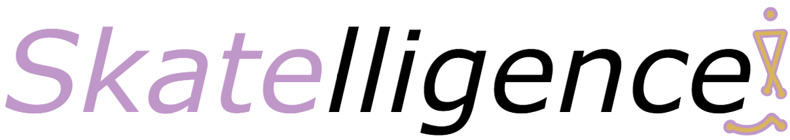
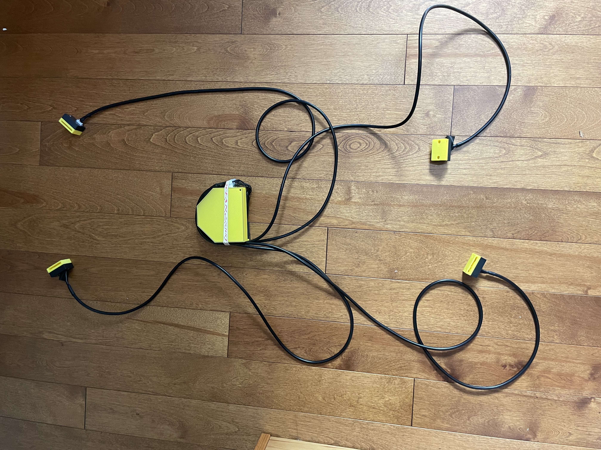
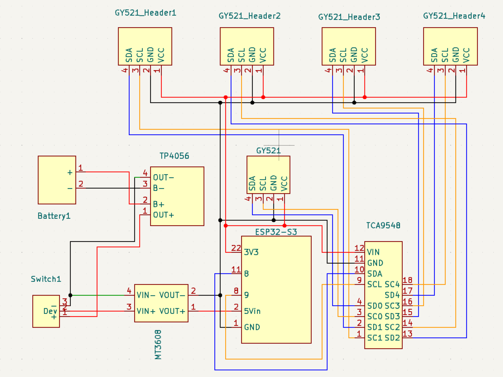

Skatelligence
Skatelligence is a wearable sensor and analytics system designed to bring data-driven insights to the world of figure skating. This project combines hardware engineering, embedded systems, and AI-based data processing to detect and classify jumps.

Skatelligence began with a simple goal: to bring high-resolution motion tracking and jump classification to figure skating through wearable technology. The first prototype, V1, served as a proof of concept and laid the foundation for further development. Building on its success, Skatelligence V2 introduced several key improvements, including a fully integrated battery and battery management system (BMS), a custom-designed PCB, and a switch from Wi-Fi to Bluetooth (BLE) for more reliable wireless communication. The remainder of this page will focus exclusively on the technical details and functionality of Skatelligence V2.
Hardware
Mechanical
The mechanical design of Skatelligence V2 centers around a central module housed in a custom 3D-printed enclosure. This enclosure contains the core components of the system, including the custom PCB, battery/BMS, and one IMU. The housing is mounted to the skater's lower back using velcro straps, and is designed shell is designed for durability and wearability, with accessible ports for charging the internal battery and reflashing the microcontroller when needed. Four JST connectors are contained in the central housing, providing wired connections to the external sensor modules—two mounted on the skater's wrists and two on the skates.

Electrical
The electrical system of Skatelligence V2 is centered around a custom-designed PCB featuring an STM32 microcontroller. This microcontroller communicates with five MPU6050 IMUs using I2C, routed through a TCA9548A I2C multiplexer due to the limited I2C channels on the microcontroller. Power is supplied by a 1S lithium-ion battery, housed within the central module. To meet the voltage requirements of the system, the battery output is boosted to 5V before being delivered to the microcontroller, which steps it back down to 3.3V to power the other components. Charging is handled by an onboard TP4056 module, which provides safe and efficient battery management. This configuration enables a compact yet robust electrical setup, supporting reliable operation throughout extended skating sessions.
